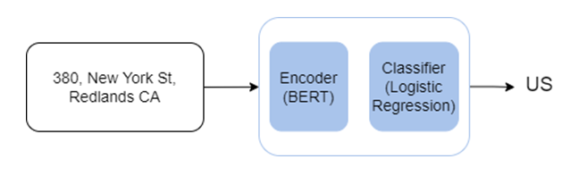

Geospatial Large Language Models for Public-Safety and Natural-Disaster Response
Connects language models with verified geospatial evidence and GIS analysis for public-safety and disaster-response support.
- Research focus
- Produce geographically grounded, understandable and human-validated responses for time-sensitive spatial decisions.
- Methods & data
- Geospatial LLMs · structured GIS data · spatial reasoning · remote sensing · traceable evidence and uncertainty communication.
- Current stage
- Ongoing · grounding strategy, scenario design and responsible-AI framework.

Research rationale and objective
Research overview
The framework links language-model reasoning to spatial layers, remote-sensing observations and GIS tools. Human validation, traceable evidence and clear uncertainty communication are treated as core design requirements.
1. Research motivation
Problem context and research need
Public-safety incidents and natural disasters are geographically complex events influenced by location, accessibility, population distribution, infrastructure, environmental conditions, and changing local circumstances.
GIS and GeoAI provide important analytical capabilities, but combining and interpreting multiple forms of spatial and contextual information may require specialist knowledge and several separate workflows.
Large language models can support natural-language interaction, synthesis, and contextual interpretation; however, general-purpose models may generate geographically inaccurate, unsupported, or overly general responses when they are not connected with reliable spatial evidence.
The research therefore explores a geospatially grounded approach in which geographic information and spatial analysis provide evidential support, while language models assist with interaction, contextual understanding, and communication.
2. Research objective
Conceptual direction
Geographic grounding. Connect language-based interaction with verified geographic information, spatial relationships, and analytical evidence.
Responsible decision support. Support understandable interpretation while retaining traceability, uncertainty communication, human validation, and domain oversight.
Methods and current progress
3. Current research progress
Work presently under development
| Research component | Current focus |
|---|---|
| Framework development | Conceptual and methodological framework development. |
| Application scope | Definition of public-safety and disaster-response application scenarios. |
| Information preparation | Preparation of geospatial, contextual, structured, remotely sensed, and textual information. |
| Grounded interaction | Design of geographically grounded language-model interaction. |
| Spatial reasoning | Development of spatial-reasoning and decision-support frameworks. |
| Responsible AI | Human-validation, bias, privacy, uncertainty, and traceability planning. |
| Evaluation design | Comparative evaluation, experimental preparation, and journal-manuscript development. |
Contribution, safeguards and status
4. Expected research contribution
Anticipated methodological and applied value
- Improved geographic grounding of language-model responses.
- More effective interpretation of spatial and contextual information.
- Natural-language interaction with complex geospatial information.
- Improved accessibility and communication of GIS-based analytical capabilities.
- Stronger traceability between generated interpretations and spatial evidence.
- Improved support for time-sensitive geographic assessment.
- Responsible integration of human expertise and artificial intelligence.
- A reproducible geospatial LLM workflow for spatial decision support.
5. Potential applications
Possible domains of use
- Disaster situational interpretation
- Emergency routing and accessibility assessment
- Critical-infrastructure review
- Public-safety incident analysis
- Evidence-grounded geographic reporting
- Emergency resource-planning support
6. My contribution
Research responsibilities
- Responsible geospatial-LLM framework design
- Integration of verified spatial evidence and GIS tools
- Query, provenance and traceability workflow design
- Human-validation and uncertainty-communication safeguards
- Scenario-based evaluation planning
- Responsible-AI evaluation, interpretation and manuscript preparation
7. Responsible research considerations
Safeguards for sensitive and high-impact geospatial applications
Because public-safety and disaster information may involve sensitive locations, vulnerable populations, and consequential decisions, responsible research considerations remain central to the proposed framework.
- Protection of sensitive and personally identifiable information.
- Use of aggregated information where appropriate.
- Transparent communication of uncertainty.
- Assessment of geographic and contextual bias.
- Traceability of spatial evidence.
- Prevention of unsupported individual-level profiling.
- Human review of consequential analytical outputs.
- Responsible use of geospatial artificial intelligence.